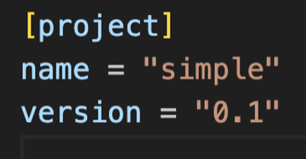
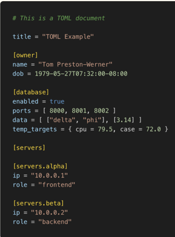
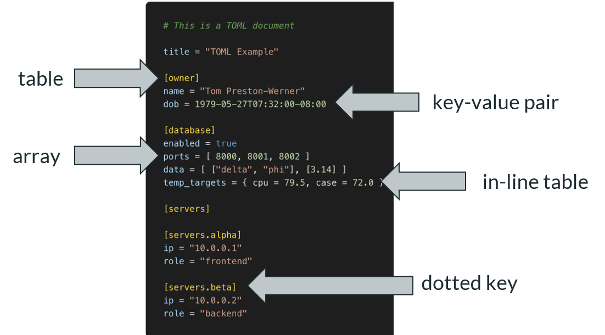
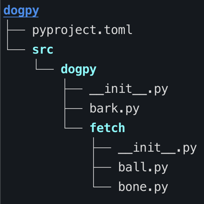
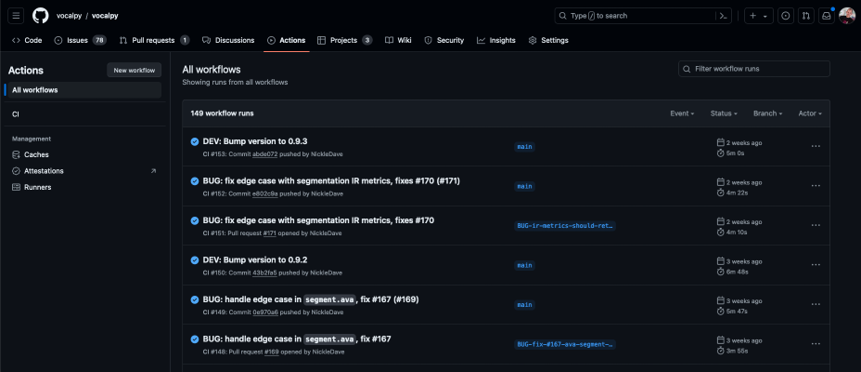

(re)introducing Python packaging
Intro
Who am I?
- PhD: neuro + behavior, post-doc: cognition
- open source scientific software dev: http://www.vocalpy.org/
- trained Carpentries instructor
- pyOpenSci (2018-present; Editor in Chief - ~2022-2024)
- participant in URSSI 2019 Winter School!
- Chair, SciPy conference (2020-present)
- Active in US Research Software Engineer Association
Acknowledgements
The previous versions of this module!
Python packaging 101 tutorial from pyOpenSci: https://www.pyopensci.org/python-package-guide/tutorials/intro.html#python-packaging-101
Python Packages: https://py-pkgs.org/
Scientific Python packaging guide: https://learn.scientific-python.org/development/tutorials/packaging/
Python Packaging User Guide: https://packaging.python.org/en/latest/
Outline / Questions
(The answers come later)
- What is a Python package?
- Why would I make a Python package?
- How do I turn my code into a Python package that I can import?
- How do I publish my Python package so others can pip install it?
- What do I need to develop and maintain a Python package, besides code?
What is a Python package?
First, let’s define module
https://docs.python.org/3/glossary.html#term-module
Module: An object that serves an organizational unit of python code. Modules have a namespace containing arbitrary python objects. Modules are loaded into Python by the process of
importing
Deconstructing that definition:
- When I write
import modulenameI am loading a module- But we also talk about “importing a package”!
- This seems to imply a package is a kind of module
- The module can contain “arbitrary Python objects”
- That could include other modules!
- It’s almost like we need a special name for a “module that can contain other modules”!
- When I load the module, its name gets added to the namespace
- namespace: a collection of currently defined names and the objects they reference
- So now I can use the module name to access things inside of it with dot notation, like another module that contains a function:
numpy.random.default_rng
Aside: why does Python have modules?
Because it’s good for your code to be modular.
Image credit: https://realpython.com/python-modules-packages/
Where do modules come from?
- The standard library
- Python code
- Compiled C code
- A local file that ends in
.py- (confusingly, also called a “module”)
- Third-party libraries that you
pip installorconda install- i.e., packages
- A local package (we’re getting to this)
What is a Python package?
Ok, now that we spent all that time defining module, we can finally define package
“A Python module which can contain submodules or recursively, subpackages.”
“Package” can have multiple meanings!
Two main usages:
https://packaging.python.org/en/latest/discussions/distribution-package-vs-import-package/
Two types of packages: import package
This is the one we already talked about
The thing you get when you write import packagename in your code
We’re going to show you how to make one of these first
Two types of packages: distribution package
The actual artifact that gets downloaded off the internet and stored on your computer somewhere
like when you run pip install package
We need to learn how to make one of these too!
Why would I make a Python package?
Fame, glory
$$$
Por amor al arte
When should I turn my code into a package?
Two common cases for research code:
Code that goes with a research article
- mainly used to reproduce the results
- AKA a (computational) project or a research compendium
A generalized tool or library that other researchers can use
Packaging code for a paper
- You have multiple scripts that use the same function
- So you want to be able to import that function
- It’s sufficient for you to make an “import package” you use in scripts (e.g., in a Jupyter notebook)
This kind of package does not necessarily need all the infrastructure you will learn about in this workshop
- such as: its own rendered website with documentation
If someone uses the code for your paper, they will get a copy of the code and set it up so they can import the same way; they don’t expect to
pip install paper
For more on projects and research compendia in general, see
- “Good enough practices in scientific computing”
- “How repro-packs can save your future self”
- Turing Way guide: https://book.the-turing-way.org/reproducible-research/compendia
- Karthik’s talk: https://github.com/karthik/rstudio2019
To share a generalized tool
This is what we’re here (mostly) to learn about!
This is when we want to make a “distribution package” too!
- You want people to be able to
pip install awesometool
How do I turn my code into a Python package I can import?
The structure of a Python package
The simplest possible Python package
- A directory with a single file in it named
__init__.py- The file can be empty
- The
__init__.pyfile tells Python that “this directory is a package

How can I import my own code?
This is enough for me to be able to import the package
as long as I’m in the right directory
- The same is true for any module:
- (by which we mean a file that ends in
.py) - I can import it if I’m in the right directory
- This is just because of how Python’s import system works:
- “First check in the current working directory if there’s a
.pyfile or a directory with an__init__.pythat has the name we’re importing”
How do I make it so I can
pip install simple- then import simple without being in the right directory?
Note that this the code I have locally, we aren’t talking about distribution packages yet!
How do I make it so I can pip install simple and then import simple without being in the right directory?
We need one more file:
a pyproject.toml file
How do I make it so I can import a module?
This is the bare minimum pyproject.toml file for our simple module
What is a TOML file?
- “Tom’s Obvious Minimal Language”: https://toml.io/en/
- “A [configuration] file format for humans”
- Used in other ecosystems
- Nice because parsers map to native type

Anatomy of a TOML file

Ok, I have a pyproject.toml file, now what?
Now just
- navigate to the directory where your module lives
- activate your virtual environment
- type
pip install . - now you can
importit!
A (slightly) more complicated Python package
Scenario: Samspon is a computational dog scientist.
Sampson has a set of functions they are using across all their projects, so they wrap them up in a package, dogpy

Sampson’s project dogpy has the following:
- A
srcdirectory (for “source code”) - The package itself inside src, a directory named dogpy
- A
pyproject.tomlfile
What’s different here?

Why src?
- So you don’t accidentally import the local package when you want to run tests on the distribution package
- Aesthetics: it looks better to have “src”, “docs”, “tests”
The package itself
- We have the
dogpydir - It contains one module (by which I mean a
.pyfile):bark.py - It also contains another directory! The elusive sub-package. Namely,
fetch. - The
fetchsub-package contains two other modules:ball.pyandbone.py
Why __init__.py anyways?
- It initializes your module
- You
importmodules, functions, etc., here - so that your users can get what they need from your package’s namespace

How should I structure my Python package?
Short version: “flat is better than nested”
- Your users want to write
package.function, notpackage.subpackage.subsubpackage.subsubsubpackage.function - But having one level of sub-packages can help with readability
- Most scientific Python packages have a set of sub-packages, each containing functions:
numpy.random.default_rngsklearn.model_selection.test_train_split
- Your package’s code ≠ your package’s namespace! You control the namespace with imports!
- Your users want to write
Long version:
How do I publish my package so others can pip install it?
How do I publish my package?
Now we need a distribution package.
We also need to define some more terms so that the rest of this make sense.
What about setup.py?
- It used to be the case that all distributions were built with a setup.py file
- There was only one tool that did this:
setuptools - Now: pure Python projects don’t need a setup.py file It’s better
The long version:
https://blog.ganssle.io/articles/2021/10/setup-py-deprecated.html
Distribution packages: frontends and backends
To move away from setup.py and setuptools, PEP 517 introduced the idea of “front-ends” and “back-ends”
https://peps.python.org/pep-0517/
Mostly you shouldn’t have to think about this.
But in your pyproject.toml file you will specify a “build backend”.
That’s the tool that knows how to take your “source tree” and make a distribution package.
Distribution packages: formats
“Build backends” (always) make two types of distribution packages:
a source distribution (“sdist”), and wheels
https://packaging.python.org/en/latest/discussions/package-formats/
- “Sdist”
- Literally your project in a compressed archive (.tar.gz)
pipuses this as a fallback if it can’t find a wheel- Downstream package managers use the sdist to provide their own distributions, e.g.
conda,homebrew
- Wheel
- Can be platform specific (e.g., Windows 64 bit)
- Matters most for packages with compiled extensions
How do I publish my package?
To-do list:
-
- Build backend
- The metadata that will show up on PyPI
Python packaging feels like a lot of work!
“I have to write this pyproject.toml file by hand, make and virtual environments, and I don’t even know how much work it will take to build a distribution package yet…”
Good news!
There are packaging tools that will do a lot of this work for you!
Python packaging feels like a lot of work!
The not so good news: there are many different tools
https://pradyunsg.me/blog/2023/01/21/thoughts-on-python-packaging/
Here’s two options:
- Lightweight:
flit– https://flit.pypa.io/en/stable/ - Swiss army knife:
hatch– https://hatch.pypa.io/
pyproject.toml metadata: [build-system]
To build our distribution package, we need a build system.
We declare this in a build-system table.

pyproject.toml project metadata
Good explainer in flit docs:
https://flit.pypa.io/en/latest/ pyproject_toml.html#new-style-metadata

Aside: python-requires and dependencies
You should know about SPEC0, that specifies what versions of Python the core scientific packages work with: https://scientific-python.org/specs/spec-0000/
Usually you don’t want to put upper bounds (>3.6, <4.0) on Python or your dependencies: https://iscinumpy.dev/post/bound-version-constraints/
Building distribution packages
Most packaging tools have some sort of build command

Publishing to PyPI
Most packaging tools have some sort of publish command
What do I need to develop and maintain a Python package, besides code?
What else do I need besides code?
Infrastructure:
All the other stuff besides code that makes it easier for
- you to develop and maintain your package
- others to use your package, give you feedback, and contribute
- README
- LICENSE
- Code of conduct
- CHANGELOG
- docs
- tests
- issue tracker
- continuous integration
README
- Often the first thing people see
- GitHub shows this by default -www.makeareadme.com/
Things you want in your README:
- Package name
- Brief description that makes sense to a broad audience
- Visuals! 1 picture = 1k words
- Installation instructions
- Usage
- How to contribute
- Citation information
LICENSE
You are giving other people permission to use your code
- https://choosealicense.com/
- MIT and BSD are common for open source scientific software
Code of conduct
- Establishes expectations for behavior
- Helps create inclusive community
- https://opensource.guide/code-of-conduct/
- Highly suggest looking at other scientific Python projects: https://docs.scipy.org/doc/scipy/dev/conduct/ code_of_conduct.html#endnotes
CHANGELOG
Human-readable record of changes to your project
Issue tracker

Continuous integration
Docs, tests, etc.,
To be discussed in later modules